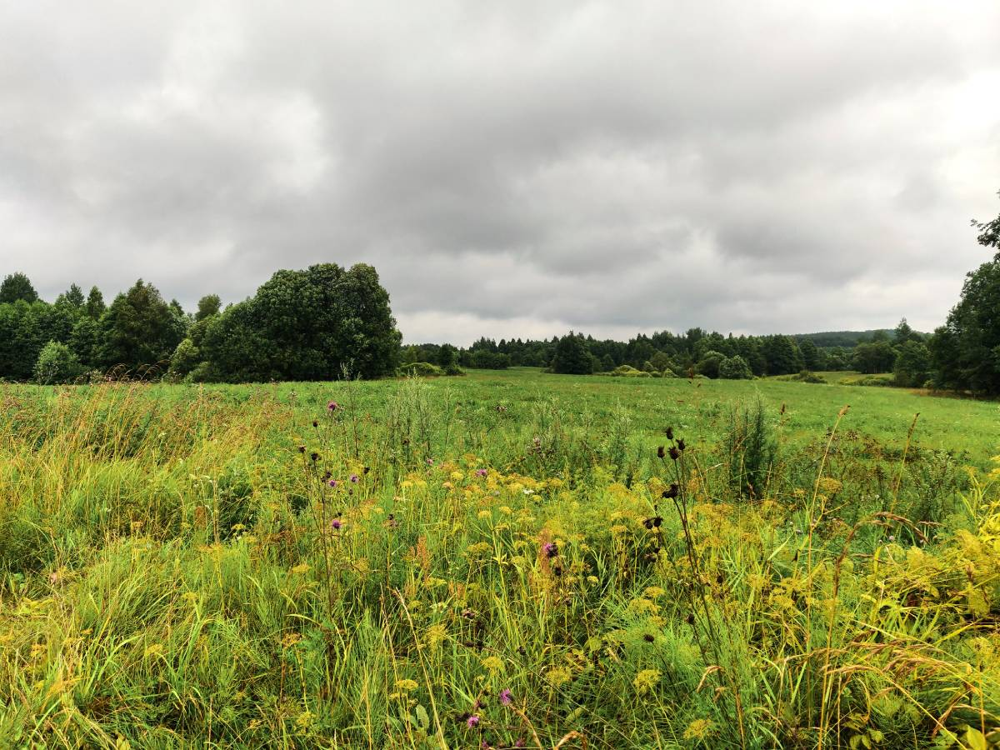
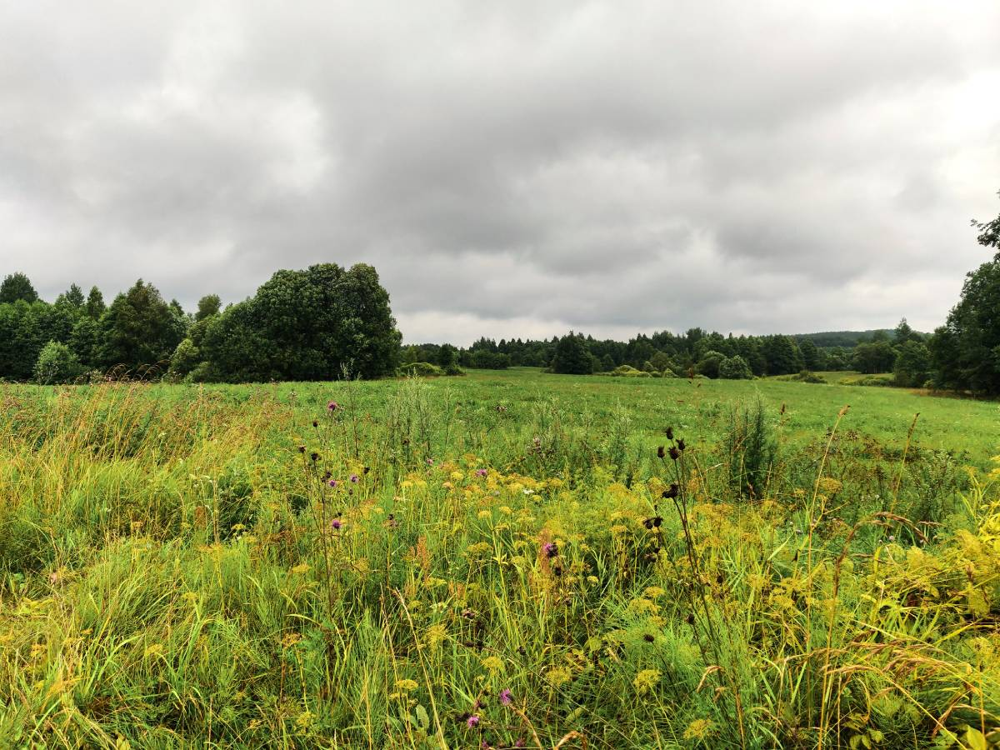

Калі вы вырашыце наведаць жудаснае і крывавае месца, дзе па легендзе адкрывалася брама ў царства Локісаў, вас чакае прыгожае падарожжа па закінутай чыгунцы і сцяжынцы ў лесе. Ля ўзгорка Локіса вы сустрэнеце вялізныя чэрапы жывёл, якія вісяць на дрэве і кустах. І гэта нездарма: бо Локіс - цар звяроў, а пагорак у лесе - брама ў яго царства! Пра гэта ў жудаснай легендзе аб Локісе. У даўнія часы, калі бог стварыў зямлю і засяліў яе жывымі істотамі,то выдаў ім усяго дастаткова для існавання. Таксама бог стварыў законы, якія казалі прыкладна аб тым жа, аб чым цяпер гавораць хрысціянскія запаветы. Але з часам чалавек пачаў парушаць божыя законы, яму трэба было ўсё больш і больш зямлі і лясоў. Чалавек захопліваў тэрыторыі звяроў недзе падманам, недзе сілай. А каб пракарміць сваіх дзяцей, пачаў забіваць мноства жывёл сабе ў ежу.
.jpg)
Звяры як маглі абараняліся, але сілы былі не роўныя. Таму яны вырашылі абраць сабе караля, які здолеў бы даць адпор людзям. Каралём стаў Локіс. Гэта цуд-істота, народжаная мядзведзіцай ад чалавека, у якога чалавечы розум і жахліва шмат сіл. Локіс можа быць чалавекам, але пры жаданні лёгка ператвараецца ў мядзведзя. Локіс, які стаў каралём, вырашыў адвесці звяроў, якія жадаюць выратавацца, у падземнае царства. Усіх у каралеўскім родзе далей таксама назвалі Локісамі, таму што ўсе яны атрымалі ў спадчыну здольнасці свайго заснавальніка.
.jpg) 

Мясцовая легенда сведчыць, што адзін з гэтых нашчадкаў Локісаў жыў сярод людзей у вёсцы Раманішкі. Яго, сірату, узяла да сябе сям'я мясцовых памешчыкаў Даўгялаў, не ведаючы пра яго чароўную прыроду. Локіс вельмі добра спраўляўся з гаспадаркай, і прыёмныя бацькі зрабілі яго кіраўніком. У мядзведзя ён пераўтвараўся толькі калі людзі набліжаліся блізка да падземнага царства, каб напалохаць іх і абараніць браму.
І вось пакахаў Локіс дачку аднаго вельмі ўплывовага двараніна. Прыйшоў ён да бацькоў гэтай дзяўчыны і стаў прасіць яе руку. Бацькі ж гэтай дзяўчыны выгналі Локіса. Тады ён звярнуўся да дзяўчыны і прапанаваў ёй уцячы. Яна ж не пагадзілася і ў дадатак яшчэ і насмяялася з Локіса праз яго беднасць. Раз'юшаны Локіс пераўтвараецца на яе вачах у мядзведзя і разрывае двух прыбеглых на шум слуг. "Ты жадала сабе ў мужыкі багатага, знакамітага чалавека, так ведай - я спадчыннік роду Локісаў, каралёў звяроў!" Пасля гэтага ў вёсцы пачаўся жах: Локіс забіваў усіх людзей, якія трапляліся яму на вочы. Людзі спрабавалі ўцячы, але нічога не дапамагала. Локіс не шкадаваў нікога. Аднойчы ноччу дзяўчына пачула крык маці. Прыбегшы на крык, убачыла маці і мёртвага бацьку, а таксама ў цемры постаць Локіса. Дзяўчына кінулася ў ногі Локісу і стала маліць яго пашкадаваць маці. Паабяцала выйсці за яго замуж. Локіс прызначыў месца для іх шлюбу якраз каля брамы ў падземнае царства. Яна схітравала і папрасіла на грошы яе сям'і пабудаваць хатку, у якім яны ажэняцца. Дзяўчына пабудавала драўляную хату без вокнаў з аднымі дзвярыма. Калі надышоў час вяселля, яна запрасіла Локіса прайсці ў гэты будынак. Калі Локіс зайшоў, яна зачыніла за ім дзверы і засунула завалу, а сцены дома былі багата змазаныя смалой. Дзяўчына, адыходзячы ад дзвярэй прыхіліла да сцяны запаленую свечку. Драўляны будынак загарэўся. Пазней людзі, якія збегліся на пажар, пачулі дзікі роў мядзведзя і вар'яцкі жаночы смех.
.jpg)
.jpg)
З таго часу брама Локіса на ўзгорку ў лесе каля Лынтупаў зачынілася. Па павер'і, яна адчыняюцца толькі калі зла на зямлі становіцца занадта шмат. Яны зацягваюць людзей у іншасвет. Выяўляецца гэта ў шматлікіх смерцях на гэтым месцы. Гэтая легенда, якую мясцовы памешчык Ксаверый Даўгяла распавёў французскаму пісьменніку Прасперу Мерыме, легла ў аснову аднайменнай навэлы "Локіс".
Запісаў Мікіта Гаргоц.